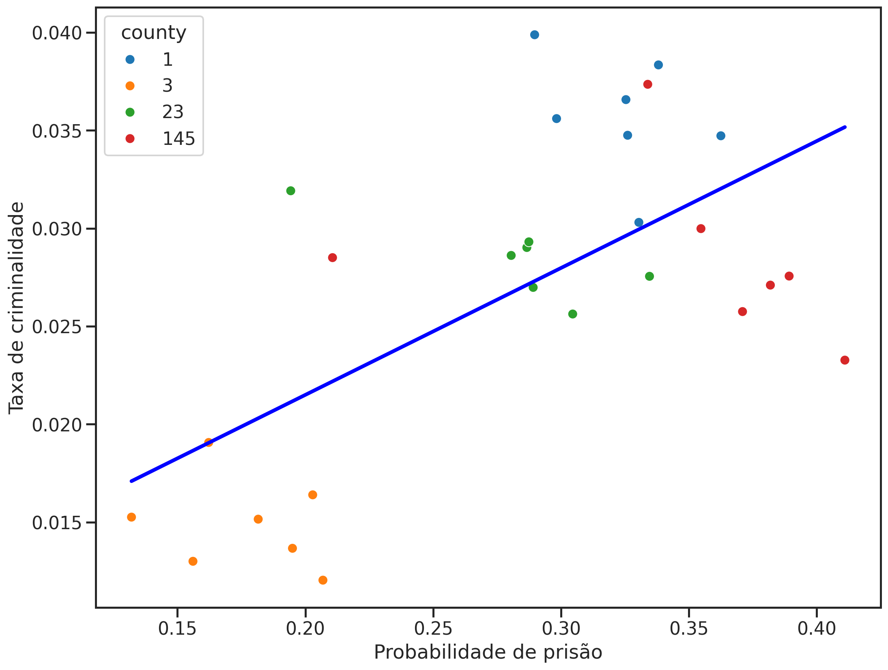
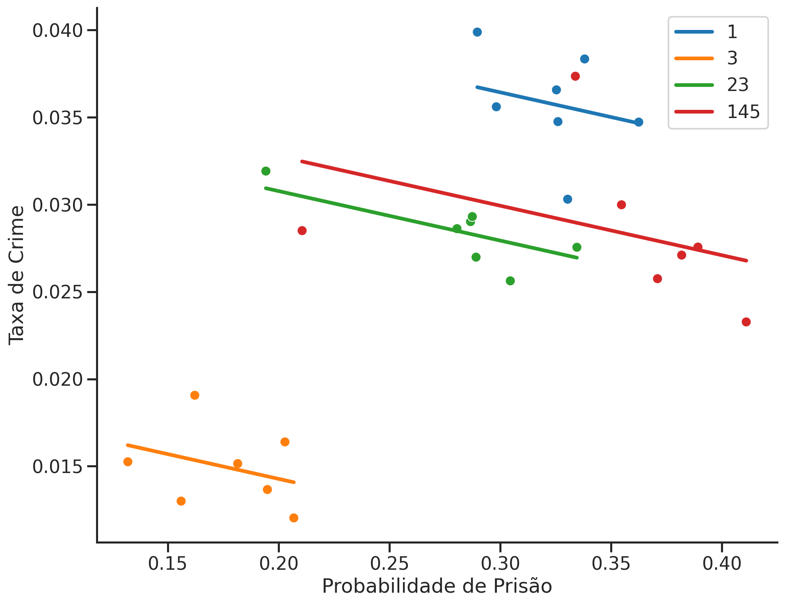

| Condado | Criminalidade | Prob. Prisão |
|---|---|---|
| 1 | 0.039885 | 0.289696 |
| 3 | 0.016392 | 0.202899 |
| 5 | 0.009337 | 0.406593 |
| 7 | 0.021916 | 0.431095 |
| 9 | 0.007518 | 0.631579 |
Econometria III
Dados em Painel
Rafael Bressan
Dados de Cortes Transversais
Até agora, lidamos com dados que se parecem com isso:
Temos um identificador de unidade (como
Condadoaqui)Variáveis observáveis em cada unidade
Geralmente chamado de conjunto de dados de seção transversal (cross-section)
Fornece visualização de um momento instantâneo
Cada linha é uma observação, cada coluna uma variável
Dados em Painel
Agora, vamos adicionar um índice de tempo: Ano.
| Condado | Ano | Criminalidade | Prob. Prisão |
|---|---|---|---|
| 1 | 81 | 0.039885 | 0.289696 |
| 1 | 82 | 0.038345 | 0.338111 |
| 1 | 83 | 0.030305 | 0.330449 |
| 1 | 84 | 0.034726 | 0.362525 |
| 1 | 85 | 0.036573 | 0.325395 |
| 1 | 86 | 0.034752 | 0.326062 |
| 1 | 87 | 0.035604 | 0.298270 |
| 3 | 81 | 0.016392 | 0.202899 |
| 3 | 82 | 0.019065 | 0.162218 |
Ao lado do identificador da unidade (
Condado) temos agoraAnoAgora um par (
Condado,Ano) indexa uma observação.Chamamos isso de conjunto de dados em painel ou longitudinal
Podemos rastrear unidades ao longo do tempo.
Seções transversais repetidas quando não são os mesmos indíviduos
Taxas de Criminalidade e Probabilidade de Prisão
- Os dados acima podem ser carregados com
Eles são de C. Cornwell e W. Trumball (1994), “Estimating the Economic Model of Crime with Panel Data”.
Uma pergunta aqui: qual é o tamanho do efeito dissuasor da aplicação da lei? Se você sabe que é mais provável que seja preso, será menos provável que cometa um crime?
Isso é complicado: a criminalidade alta causa uma resposta policial mais forte, que atua como um impedimento? Ou o crime é baixo porque o impedimento é forte para começar?
Isso às vezes é chamado de uma situação de modelo de equações simultâneas: a resposta da polícia afeta o crime, e o crime afeta a resposta da polícia \[ \begin{aligned} police &= \alpha_0 + \alpha_1 crime \\ crime &= \beta_0 + \beta_1 police \end{aligned} \]
Taxas de Criminalidade e Probabilidade de Prisão
A maioria da literatura anterior a esse artigo estimava equações simultâneas de dados de corte transversal
Cornwell e Trumball estão preocupados com a heterogeneidade não observada entre as jurisdições.
Por quê? O que poderia dar errado?
Vamos escolher 4 condados do nosso conjunto de dados
Vejamos a relação entre taxa de criminalidade vs probabilidade de prisão
Primeiro para todos eles juntos como uma única seção transversal
Em seguida, aproveitando a estrutura do painel (ou seja, cada condado ao longo do tempo).
Crime vs Prisão em Seção Transversal
Subconjunto de dados para 4 condados
plotar taxa de criminalidade versus probabilidade de prisão.
Code
# Subset the data for 4 counties
css = crime4.loc[crime4["county"].isin([1, 3, 145, 23])]
# Create a figure and axes
fig, ax = plt.subplots()
# Scatter plot
ax.scatter(css["prbarr"], css["crmrte"])
# Linear regression line
slope, intercept = np.polyfit(css["prbarr"], css["crmrte"], 1)
ax.plot(css["prbarr"], slope * css["prbarr"] + intercept, color="red")
# Set labels and title
ax.set_xlabel("Probabilidade de prisão")
ax.set_ylabel("Taxa de criminalidade")
# Display the plot
plt.show()
Crime vs Prisão em Seção Transversal
Relacionamento positivo!
Vemos uma linha inclinada para cima!
Maior probabilidade de prisão está associada a maiores taxas de criminalidade.
Quão forte é o efeito?
Inclinação da reta: 0.0648Aumentar a probabilidade de prisão em 0,1 unidade (ou seja, 10 pontos percentuais), aumenta a taxa de criminalidade em 0,00648.
Aumento de 10 p.p. na probabilidade de prisão (por exemplo,
prbarrpassa de 0,2 para 0,3) …… está associado a um aumento na taxa de criminalidade de 0,021 para 0,028, ou 33,33% de aumento na taxa de criminalidade.
Crime vs Prisão em Seção Transversal
Ok, mas o que isso significa?
Literalmente: condados onde existe maior probabilidade de ser preso também têm maior índice de criminalidade.
Então, isso significa que polícia mais eficiente em prender criminosos e, portanto, a probabilidade de ser preso é mais alta, causa aumento de criminalidade?
Do que depende a eficiência da polícia?
O nível de pobreza em um condado importa para isso?
As leis locais?
🤯 Uau, parecem haver muitas coisas deixadas de fora desta simples análise.
Variação Intragrupo e Entre-grupos
Você ouvirá frequentemente os termos variação intra (within) e entre (between) em contextos de dados de painel.
Variação Intra
coisas que mudam dentro de cada grupo ao longo do tempo:
aqui dissemos orçamentos policiais
e os níveis de pobreza mudariam dentro de cada grupo e ao longo do tempo.
Variação Entre
Coisas que são fixas para cada grupo ao longo do tempo:
Leis e costumes locais
Direitos Civis
diferem apenas entre grupos
Variação Intragrupo e Entre-grupos

Apresentando o Efeito Fixo

Coletamos todas as características invariáveis no tempo e específicas do grupo no fator
Condado.Controla todos os fatores que não variam ao longo do tempo dentro de cada unidade.
Chamamos
Condadode efeito fixo.
Estimação de Efeitos Fixos
Variável Omitida, VI e Dados em Painel
Vimos viés de variável omitida (OVB). Por exemplo, se o modelo verdadeiro for: \[ y_i = \beta_0 + \beta_1 x_i + \underbrace{c_i + u_i}_{v_i} \] se \(c_i\) é não observável e \(Cov(x_i, c_i)\neq0 \Rightarrow E[v_i|x_i]\neq 0\)
Solução Seção Transversal
onde \(c_i\) é variável omitida. Viés! 😭
Encontre VI correlacionado com probabilidade de prisão, mas não condado
Solução Dados em Painel
\[y_{it} = \beta_1 x_{it} + c_i + u_{it},\quad t=1,2,...T\]
\(c_i\): efeito fixo individual ou heterogeneidade não observada.
\(c_i\): é fixo ao longo do tempo (eg. costumes locais), mas pode ser correlacionado com \(x_{it}\)!
Regressão com Variável Dummy
Abordagem mais simples: inclua uma variável dummy para cada grupo \(i\).
Isso é literalmente controlar para o condado \(i\)
Cada \(i\) tem seu próprio intercepto \(c_i\)
Regressão com Variável Dummy
\[y_{it} = \beta_1 x_{it} + c_i + u_{it},\quad t=1,2,...T\]
Code
| coef | std err | t | P>|t| | |
|---|---|---|---|---|
| C(county)[1] | 0.044945 | 0.004556 | 9.866057 | 9.853488e-10 |
| C(county)[3] | 0.019950 | 0.002647 | 7.535569 | 1.178139e-07 |
| C(county)[23] | 0.036447 | 0.004004 | 9.103045 | 4.365553e-09 |
| C(county)[145] | 0.038445 | 0.004900 | 7.845978 | 5.977486e-08 |
| prbarr | -0.028376 | 0.013629 | -2.082080 | 4.864957e-02 |
Regressão com Variável Dummy
Dentro de cada condado, relacionamento negativo!!
Diferentes interceptos
Coeficiente angular único \(\beta\). (as linhas são paralelas).
Cada condado tem seu próprio intercepto \(c_i\).
Code
# Get predicted line
css["pred"] = mod_dummy.predict(css)
# Plot regression lines
g = sns.lmplot(
data=css, x="prbarr", y="pred", scatter=False, hue="county", legend=False
)
g.figure.set_size_inches(13, 9)
# Create scatter plot with line for each county
sns.scatterplot(
data=css, x="prbarr", y="crmrte", hue="county", legend=False, ax=g.axes[0, 0]
)
plt.legend()
# Set plot labels
plt.xlabel("Probabilidade de Prisão")
plt.ylabel("Taxa de Crime")
# plt.title("Regressão com Variável Dummy")
# Show the plot
sns.despine()
plt.show()
Primeira Diferença
Se tivermos apenas dois períodos, \(T=2\), poderíamos apenas diferenciar os períodos
\[\begin{align}y_{i1} &= \beta_1 x_{i1} + c_i + u_{i1} \\y_{i2} &= \beta_1 x_{i2} + c_i + u_{i2} \\& \Rightarrow \\ y_{i1}-y_{i2} &= \beta_1 (x_{i1} - x_{i2}) + c_i-c_i + u_{i1}-u_{i2} \\\Delta y_{i} &= \beta_1 \Delta x_{i} + \Delta u_{i}\end{align}\]
E para recuperar o parâmetro de interesse \(\beta_1\) rodamos
A Transformação Intragrupo (Within)
Com \(T>2\) precisamos de uma abordagem diferente
Um conceito importante é a chamada transformação intragrupo (within)
Então, controlando a identidade do grupo e observando apenas a variação dentro deste grupo
- Seja \(\bar{x}_i\) a média ao longo do tempo dos valores \(x\) de \(i\): \[\bar{x}_i = \frac{1}{T} \sum_{t=1}^T x_{it}\]
- para todas as variáveis, calcule sua média no tempo para cada grupo \(i\): \(\bar{x}_i,\bar{y}_i\) etc.
- para cada observação, subtraia essa média de tempo do valor real e defina \(\ddot{x}_{it}=x_{it} - \bar{x}_i\) e \(\ddot{y}_{it}=y_{it}-\bar{y}_i\)
- Por fim, regresse \(\ddot{y}_{it}\) em \(\ddot{x}_{it}\)
A Transformação Intragrupo (Within)
- Se \(y_{it} = \beta_1 x_{it} + c_i + u_{it}\), então
\[ \begin{align*} \bar{y}_i&=\frac{1}{T}\sum_t y_{it}\\ &=\frac{1}{T}\left[ \beta_1\sum_t x_{it}+\sum_t c_{i}+\sum_t u_{it}\right]\\ &=\beta_1\bar{x}_i+c_i+\bar{u}_i \end{align*} \]
- Logo, \[ \begin{align*} \ddot{y}_{it}&=y_{it}-\bar{y}_i\\ &=\beta_1 x_{it} + c_i + u_{it} - \left(\beta_1\bar{x}_i+c_i+\bar{u}_i\right)\\ &=\beta_1\ddot{x}_{it} + \ddot{u}_{it} \end{align*} \]
A Transformação Intragrupo (Within)
Graus de liberdade
\(\ddot{y}_{it}=\beta_1\ddot{x}_{1,it} + \beta_2\ddot{x}_{2,it} + \ldots + \beta_k\ddot{x}_{k,it} + \ddot{u}_{it}\)
A princípio temos \(NT - k\) graus de liberdade
⚠️ Isso não é verdade!!
Tivemos de calcular \(N\) médias intragrupo. Perdemos esses graus de liberdade
gl: \(NT-N-k=N(T-1)-k\)
Quanto mais efeitos fixos adicionarmos na regressão, mais gl iremos perder
A Transformação Intragrupo (Within)
Hipóteses
Satisfeitas as seguintes hipóteses, o estimador de Efeitos Fixos será não viesado
O modelo populacional é: \(y_{it}=X_{it}\beta+c_i+u_{it}\). Para cada \(i\), com \(t=1, \ldots, T\) e \(c_i\) é não observado.
\(\{y_{it}, X_{it}\}_{i=1}^N\) é uma amostra aleatória para um dado \(t\)
\(X_{it}\) possui variação na dimensão \(t\)
Para cada \(t\), o valor esperado do erro \(u_{it}\) condicional aos regressores em todos os períodos de tempo e ao efeito não observado, é zero: \(E[u_{it}\mid X_{i1},\ldots, X_{iT}, c_i]=0\) (exogeneidade estrita)
- Se tivermos um painel curto \((N>>T)\), então podemos dizer que assintoticamente \((N\rightarrow\infty)\) o estimador de Efeitos Fixos é consistente.
A Transformação Intragrupo (Within)
Hipóteses
Por que a hipótese de exogeneidade estrita é tão importante?
\(E[u_{it}\mid X_{i1},\ldots, X_{iT}, c_i]=0\) implica em \(E[X_{is}u_{it}]=0\quad s,t = 1,\ldots, T\)
Modelo transformado é \(\ddot{y}_{it}=\ddot{X}_{it}\beta+\ddot{u}_{it}\)
MQO não viesado se \(E[\ddot{X}_{it}\ddot{u}_{it}]=0\qquad\)
Interpretação: uma vez que \(X_{it}\) e \(c_i\) estejam controlados na regressão, outros períodos para os regressores não importam!
⚠️ ATENÇÃO
- Isso não impede modelos de defasagem distribuída!
- Modelos de variável dependente defasada estão excluídos
A Transformação Intragrupo (Within)
Hipóteses
- Por que a hipótese de exogeneidade estrita é tão importante?
\[ \begin{align*} E[\ddot{X}_{it}\ddot{u}_{it}]&=E[(X_{it}-\bar{X}_i)(u_{it}-\bar{u}_i)]\\ &=E[X_{it}u_{it}]-E[X_{it}\bar{u}_i]-E[\bar{X}_iu_{it}]+E[\bar{X}_i\bar{u}_i] \end{align*} \]
\(E[X_{it}u_{it}]= 0\), pois \(E[X_{is}u_{it}]=0\) e \(s=t\)
\(E[X_{it}\bar{u}_i]=\frac{1}{T}\lbrace E[X_{it}u_{i1}]+\ldots + E[X_{it}u_{iT}]\rbrace\)
- Cada um dos valores esperados também é zero pela hipótese de exogeneidade estrita!
O mesmo vai ocorrer para os termos \(E[\bar{X}_iu_{it}]\) e \(E[\bar{X}_i\bar{u}_i]\)
Ou seja, a hipótese de exogeneidade estrita, \(E[u_{it}\mid X_{i1},\ldots, X_{iT}, c_i]=0\) implica em \(E[X_{is}u_{it}]=0\quad s,t = 1,\ldots, T\), e garante que no modelo transformado o MQO é não viesado
A Transformação Intragrupo (Within)
Solução Manual
Isso funciona para o nosso problema com o efeito fixo \(c_i\) porque \(c_i\) não varia no tempo por suposição! A média de uma constante é ela mesma, \(\bar c_i = c_i\) \[y_{it}-\bar{y}_i = \beta_1 (x_{it} - \bar{x}_i) + c_i - \bar c_i + u_{it}-\bar{u}_i\]
É fácil fazer você mesmo! Primeiro vamos calcular os valores centralizados:
A Transformação Intragrupo (Within)
Solução Manual
Em seguida, rodamos os modelos Agrupado e Transformação Intragrupo com MQO simples:
Code
mod_pooled = smf.ols(formula="crmrte ~ prbarr", data=cdata).fit()
mod_intra = smf.ols(formula="demeaned_crime ~ -1 + demeaned_prob", data=cdata).fit()
result = pd.DataFrame({
"Agrupado": [mod_pooled.params['prbarr'], mod_pooled.bse['prbarr']],
"Dummy": [mod_dummy.params['prbarr'], mod_dummy.bse['prbarr']],
"Intragrupo": [mod_intra.params['demeaned_prob'], mod_intra.bse['demeaned_prob']]
}, index=["Prob. Prisao", "Erro Padrão"])
result| Agrupado | Dummy | Intragrupo | |
|---|---|---|---|
| Prob. Prisao | 0.064801 | -0.028376 | -0.028376 |
| Erro Padrão | 0.015901 | 0.013629 | 0.012579 |
A Transformação Intragrupo (Within)
Solução Manual
| Agrupado | Dummy | Intragrupo | |
|---|---|---|---|
| Prob. Prisao | 0.064801 | -0.028376 | -0.028376 |
| Erro Padrão | 0.015901 | 0.013629 | 0.012579 |
A estimativa para
prbarré positiva no PooledCuidando da heterogeneidade não observada \(c_i\)…
…seja incluindo uma dummy para cada \(i\) ou transformação intragrupo
obtemos: -0.028 .
A Transformação Intragrupo (Within)
Interpretando as estimativas
{r,echo = FALSE} panel_p = round(predict(mod$dummy,newdata = data.frame(prbarr = c(0.2,0.3), county = factor(1))),3)
Como interpretar essas inclinações negativas?
Olhamos para uma única unidade \(i\) e perguntamos:
se a probabilidade de prisão em \(i\) aumentar em 10 pontos percentuais (ou seja, de 0,2 para 0,3) do ano \(t\) para \(t+1\), esperamos que os crimes por pessoa caiam de
r panel_p[1]parar panel_p[2], ou porr round(100 * diff(panel_p) / panel_p[1],2)por cento.
{r,echo = FALSE,fig.height = 3} pcolor
Estimativa de Efeitos Fixos no R
use um Pacote!
Na vida real, você dificilmente realizará a transformação intragrupo manualmente
use um pacote!
Existem várias opções (
fixesté o mais eficiente). Em nosso contexto:
Observe a configuração semelhante à
estimatr::iv_robustfórmula de duas partes. Aqui os efeitos fixos vêm após o|.Além disso, podemos ter mais de um efeito fixo! Para um exemplo legal com três efeitos fixos veja a vinheta do pacote.
Estimativa de Efeitos Fixos no R
use um Pacote!
Nem só de R vive um econometrista! Alguns outros pacotes de EF também para Stata e Python
- R
- Stata
- Python
Statsmodels(dummies somente)linearmodels(EF em duas vias)
Estimativa de Efeitos Fixos no R
use o fixest 🙂
```{r,echo = FALSE} ht = modelsummary::modelsummary(mod[c(“pooled”,“dummy”,“intra”,“FE”)], statistic = ‘std.error’, coef_omit = “factor”, gof_map = gofmap,output = “huxtable”)
ht %>% set_text_color(row = c(4,6,4), col = c(3,4,5), value = ‘red’)
:::
:::{.column width="25%"}
* Mesmas estimativas! 😅
* `fixest` calcula erros padrão **robustos por clusters**.
* Suspeita que haja forte correlação nos resíduos *dentro* de cada condado (ao longo do tempo).
:::
::::
## Transformação Intragrupo Animada!
::::{.columns}
:::{.column width="75%"}
```{r,echo = FALSE}
knitr::include_graphics("../../img/gifs/panel.gif")Transformação intragrupo centraliza os dados!
Subtrair a média temporal de \(y\) e \(x\), retira os fatores fixos no tempo relacionados ao condado
Apenas variação dentro do condado
Créditos para Nick C Huntington-Klein.
📚 Leitura Recomendada
WOOLDRIDGE, Jeffrey M. Introdução à econometria: uma abordagem moderna. São Paulo: Cengage Learning, 2016. Tradução da 4ª edição norte-americana por José Antonio Ferreira. Capítulo 13 O Agrupamento de Cortes Transversais ao Longo do Tempo.
GUJARATI, Damodar N.; PORTER, Dawn C. Econometria básica. Porto Alegre: Amgh Editora, 2011. - 5. ed. Capítulo 16 Modelos de regressão com dados em painel
ATÉ A PRÓXIMA AULA!
.footnote[ [1]: Este slides foram baseados nas aulas de econometria da SciencesPo Department of Economics]